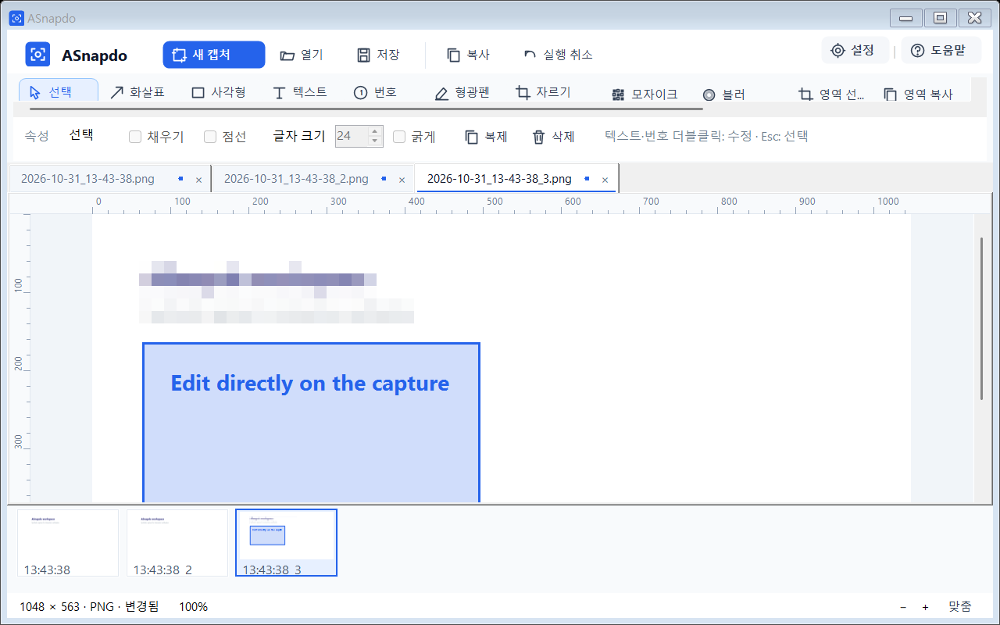
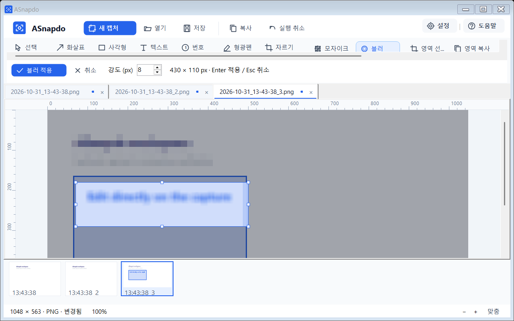
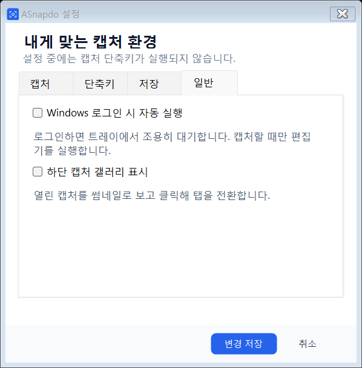

회사나 관공서에서도 무료인가요?
개인·기업·관공서 모두 무료로 사용할 수 있습니다. 자세한 사용 조건은 이용약관에서 확인하세요.
오류를 알려주거나, 작업 순서를 안내하거나.
에이스냅두는 캡처에 화살표와 번호로 설명을 더하고, 필요한 부분을 가린 뒤 이미지로 복사하는 무료 Windows 도구입니다.

실제 화면 크게 보기원하는 범위를 드래그하거나 마우스가 있는 모니터의 전체 화면을 캡처합니다. 영역을 고를 때 크기, 좌표와 커서 주변 픽셀을 확인할 수 있습니다.
새 캡처는 새로운 탭에 열립니다. 탭별 편집 상태와 실행 취소 이력을 유지하면서 비교하고 작업하세요.
기본 영역 캡처는 Print Screen, 전체 화면은 Ctrl+Shift+1입니다. 설정에서 바꾸고 사용 가능 여부를 확인할 수 있습니다.
핵심 부분을 가리키고 강조하세요. 주석을 개별 선택해 이동하거나 크기를 바꾸고, 색상과 선 스타일을 조절할 수 있습니다.
캔버스에 바로 글을 입력하고 연속 번호로 작업 순서를 안내하세요. 텍스트와 번호는 더블클릭해 수정합니다.
필요한 영역만 남기고 확대해 세부를 다듬으세요. 가로·세로 줄자는 확대와 스크롤에 맞춰 이미지 픽셀 좌표를 표시합니다.
캔버스에서 영역을 드래그한 뒤 미리보기를 보며 강도를 조절합니다. 배경과 겹친 주석까지 포함한 선택 영역에 효과가 적용됩니다.

실제 화면 크게 보기편집한 결과 전체를 복사하거나, 한 탭의 일부를 다른 캡처에 붙여넣을 수 있습니다. 주석만 옮겨 다른 크기의 캡처에서 재사용할 수도 있습니다.
| 단축키 | 동작 |
|---|---|
| Ctrl + C | 현재 탭의 편집 결과 전체 이미지 복사 |
| 영역 복사 → 드래그 후 놓기 | 드래그를 놓으면 선택 영역 자동 복사 |
| Ctrl + V | 이미지를 현재 캡처 위에 이동·크기 조절 가능한 객체로 붙여넣기 |
| Ctrl + Shift + C | 현재 탭의 주석 객체 전체 복사 |
| Ctrl + Shift + V | 주석을 다른 캡처 탭에 붙여넣기 |
| Ctrl + S | 현재 편집 결과를 PNG로 저장 |
클립보드 목록에 최근 복사 영역을 최대 12개 보관하고 원하는 항목을 골라 붙여넣을 수 있습니다. 목록은 앱 종료 시 비워집니다. 텍스트 입력 중에는 표준 텍스트 복사·붙여넣기 동작이 적용됩니다.
상단의 설정에서 캡처 방식, 단축키, 자동 저장과 실행 환경을 정합니다. 설정 중에는 캡처 단축키가 실행되지 않습니다.
트레이 대기 중에는 네이티브 프로세스만 실행하고 편집기는 종료합니다. 트레이의 종료는 저장 확인 없이 앱을 종료합니다.

실제 화면 크게 보기설치와 지원, 사용 방법을
확인하세요.
개인·기업·관공서 모두 무료로 사용할 수 있습니다. 자세한 사용 조건은 이용약관에서 확인하세요.
Windows 10 또는 Windows 11의 64비트(x64) 환경을 지원합니다. 현재 제공하는 파일은 Windows용 설치 프로그램이며, 설치 시 관리자 권한이 필요합니다. 파일 크기는 36.6 MB입니다.
현재 설치 파일에는 디지털 서명이 없어 SmartScreen 경고가 나타날 수 있습니다. 다운로드 정보의 파일명과 SHA-256을 확인할 수 있습니다. 회사·기관 PC에서는 해당 조직의 소프트웨어 설치 정책을 따라 주세요.
설치가 끝나면 시스템 트레이에서 실행됩니다. 기본 영역 캡처 단축키인 Print Screen으로 화면을 캡처하면 편집할 수 있습니다. 단축키는 설정에서 변경할 수 있습니다.
창의 X 버튼으로 닫으면 캡처 탭과 편집 상태를 보관하고 트레이에서 대기합니다. 다시 열면 작업을 이어갈 수 있습니다. 앱을 완전히 종료하려면 필요한 결과를 PNG로 저장한 뒤 트레이의 종료를 선택하세요. 트레이 종료 시에는 별도 저장 확인이 없습니다.
필요한 이미지를 저장하고 트레이에서 ASnapdo를 종료한 다음, 새 설치 파일을 실행하세요. 이번 버전에서 바뀐 내용은 변경이력에서 확인할 수 있습니다.
개인, 기업, 관공서 모두 무료입니다.
설치 화면의 이용약관을 확인하고 시작하세요.
기존 버전이 실행 중이면 필요한 이미지를 저장하고 트레이에서 종료한 뒤 설치하세요. 설치 완료 후 트레이에서 자동 실행됩니다. 디지털 서명이 없어 SmartScreen 경고가 표시될 수 있습니다. 1.0.2 릴리즈 노트 ↗